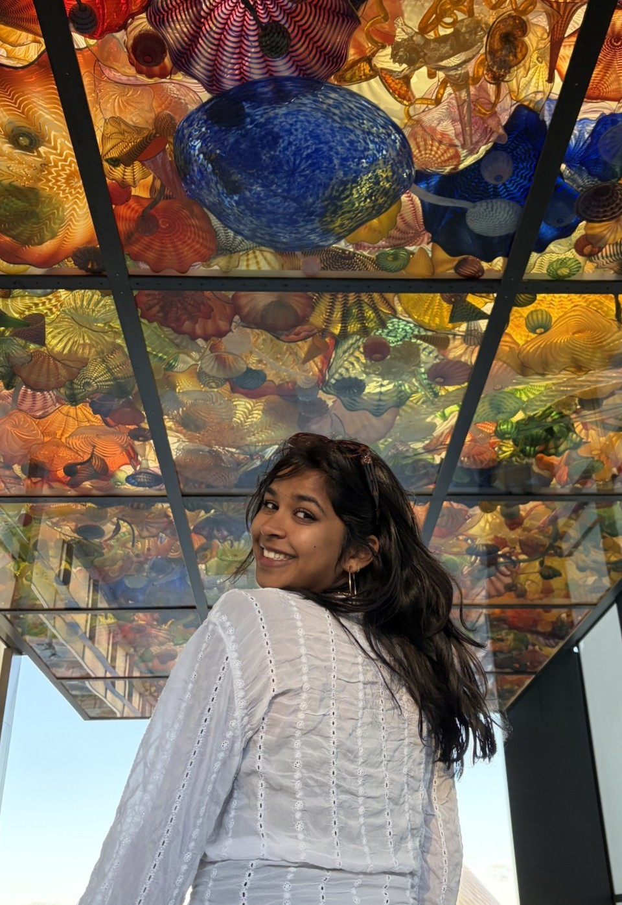

About Me

I am a senior studying business analytics and information management with a computer science integration. I hope to have a future in healthcare analytics and hope to learn how to make things more accessible this semester.
I, as a classic Coloradan, enjoy spending time outside and have ventured many of the hikes Boulder has to offer. I am also a crafty person and am commonly crocheting, painting, drawing, or messing around with new mediums.